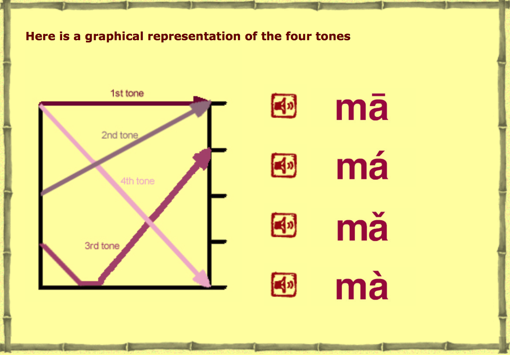
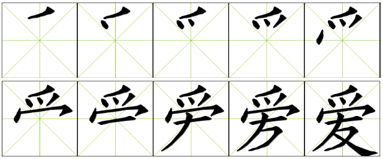

Chinese is very different from other languages that use alphabet, because the written form is not directly linked to the pronunciation. In order to provide a phonetic way to express the sounds of Chinese and also for using dictionaries, Chinese linguists have drafted the “Scheme for the Chinese Phonetic Alphabet”.
In 1958, Chinese government passed the law to use this scheme, today known as pinyin or literary, “arranged sounds”. Pinyin uses the Latin alphabet to transcribe Chinese characters. Nowadays, most people who study Mandarin Chinese, start learning the language from pinyin, it’s compulsory in Chinese schools and every Chinese in Mainland China starts learning pinyin from kindergarten (5-6 y.o.). However, the old generation of Chinese (born before 1958) and those who live in Taiwan, may not necessarily know how to write in pinyin.
The Chinese use a very different writing system to English. English words are made up of a collection of letters that each has its own sound.
The Chinese use logograms - where a symbol represents a meaning or a word. The basic principles behind Chinese writing have remained unchanged for thousands of years. Each character consists of a number of strokes or lines set inside an imaginary square. Thousands of bones from the Shang dynasty have been unearthed with writing on them. Many of the characters on these bones still exist (in a slightly altered state) today.
